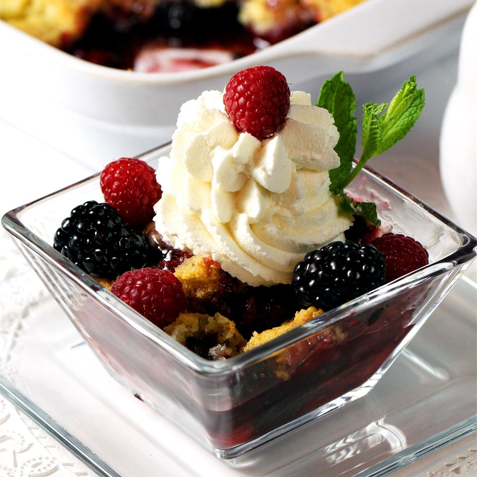

Triple Berry Crisp

What is this dish?
This is a wonderful berry crisp. I use a triple berry mixture of raspberries, blackberries, and blueberries, but just one works well too! My family loves it! Serve it with whipped cream and it looks great.
Ingredients:
- 1 ½ cups fresh blackberries
- 1 ½ cups fresh raspberries
- 1 ½ cups fresh blueberries
- 4 tablespoons white sugar
- 2 cups all-purpose flour
- 2 cups rolled oats
- 1 ½ cups packed brown sugar
- 1 teaspoon ground cinnamon
- ½ teaspoon ground nutmeg
- 1 ½ cups butter
Steps:
- Preheat oven to 350 degrees F (175 degrees C).
- In a large bowl, gently toss together blackberries, raspberries, blueberries, and white sugar; set aside.
- In a separate large bowl, combine flour, oats, brown sugar, cinnamon, and nutmeg. Cut in butter until crumbly. Press half of mixture in the bottom of a 9x13 inch pan. Cover with berries. Sprinkle remaining crumble mixture over the berries.
- Bake in the preheated oven for 30 to 40 minutes, or until fruit is bubbly and topping is golden brown.